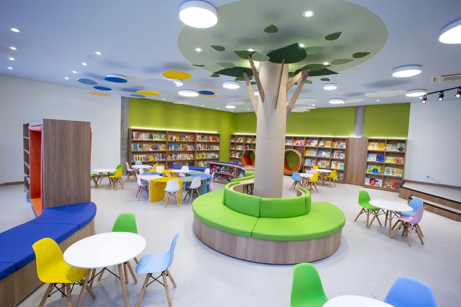
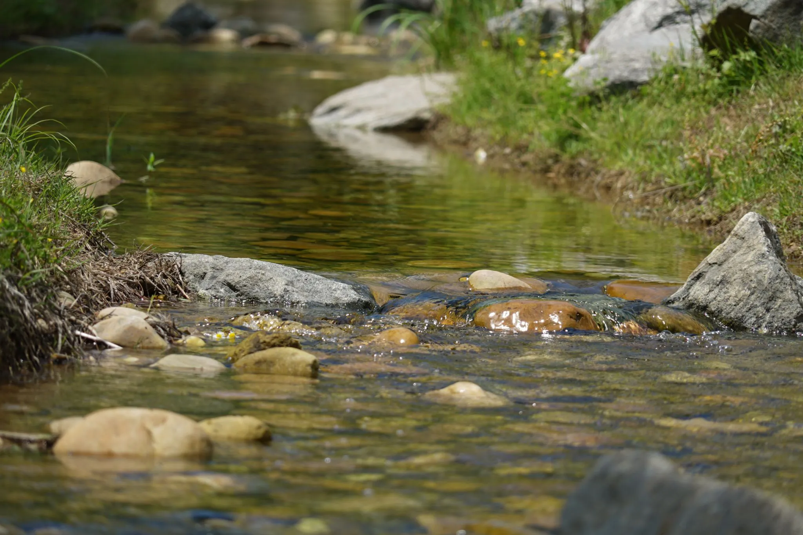

Educação
Biblioteca Viva
Reforma de bibliotecas comunitárias com acervo infantil.
68% da metaVer projeto
Cadastre-se como voluntário, vincule o valor da sua doação e acompanhe tudo na Comunidade.

Educação Meio ambiente Saúde

Reforma de bibliotecas comunitárias com acervo infantil.

Mutirões de limpeza e educação ambiental nas margens do rio.

Para doar, complete o cadastro de voluntário e informe o valor. Nome e doação passam a aparecer na Comunidade.